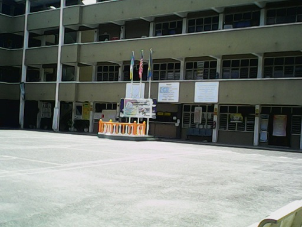

Have a Good Day!
Experience
In primary school
I get my first formal education at SK Seri Impian which is the same school as my mom's. I studied there since standard 1 until standard 6. My mom used to teach me for mathematics and Bahasa subject when I was in standard 2 and 3. In standard 3, I was appointed as library prefect. I loved to go to the library when the bell rang for recess. A lot of things I learned when I go to school. My friends were very nice and cheerful. Since we were kids back then, we were quite playful and a little bit naughty. All of the teachers in my school know my name because I always when to the teacher's room to find my mom. A lot of memories keep playing in my mind. We loved to plant vegetables at the back of school building, playing in the pre-school's playground, playing hide and seek, camping, cooking, school visit, festivals and more. From here, I know what the value of friendship and how precious our time is.
In secondary school

SMK Datuk Haji Abdul Kadir is a very old school in Kepala Batas and known as Kepala Batas Secondary School. My late dad was one of the alumni there. Since it was familiar to him, I was send there to study in Islamic Class. The culture there was very different with my primary school. There were Chinese, Indian and Malay students studied in the same class. Since I was in Islamic class, my class building is quite far with ordinary class. As you know, my parents sent me to stay in the hostel instead of our house. They cannot send me every single day to school due to they go to work in different destination as my school. When we in the hostel, we would have our own time to study and sport. Personally I really like to follow the time arranged. All of the student might be tired due to the tight schedule but we could manage it because we are together. A different age doesn't made us awkward to be friends or sharing problems. Me and my classmates were very closed to each other. We would go to school together, playing, studying, and handling programs and more. I loved to play volleyball with them. We were not that good to it but we really enjoyed the moment. When it was examination weeks, we would like to study in group. Each of us needs to explain for the chapter she had read. And others will learn to be more understanding and catch up with the topic we have discussed.